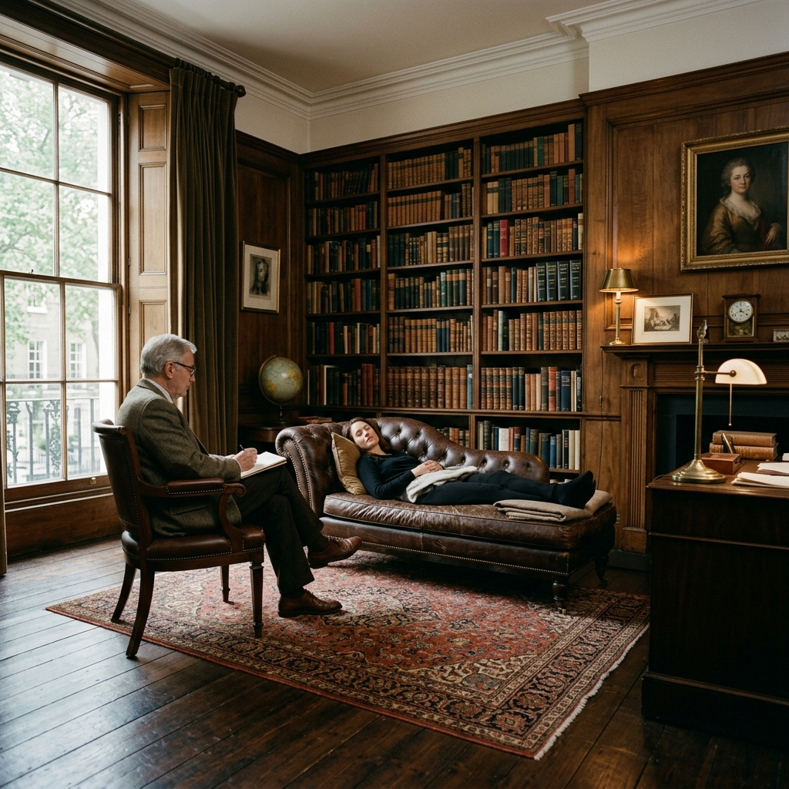
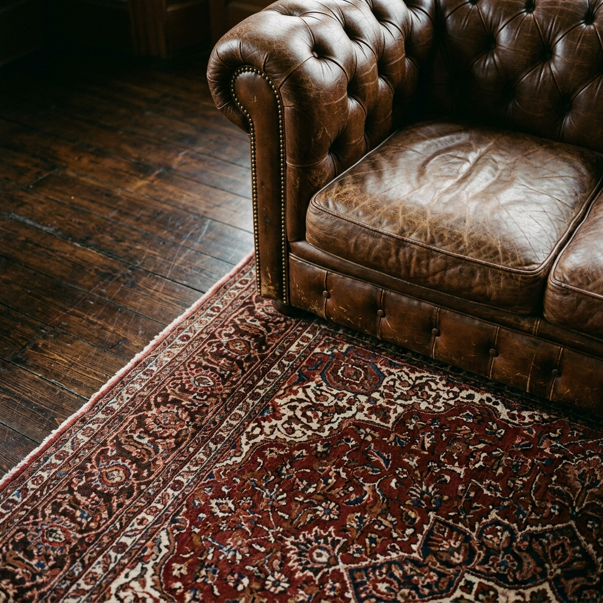
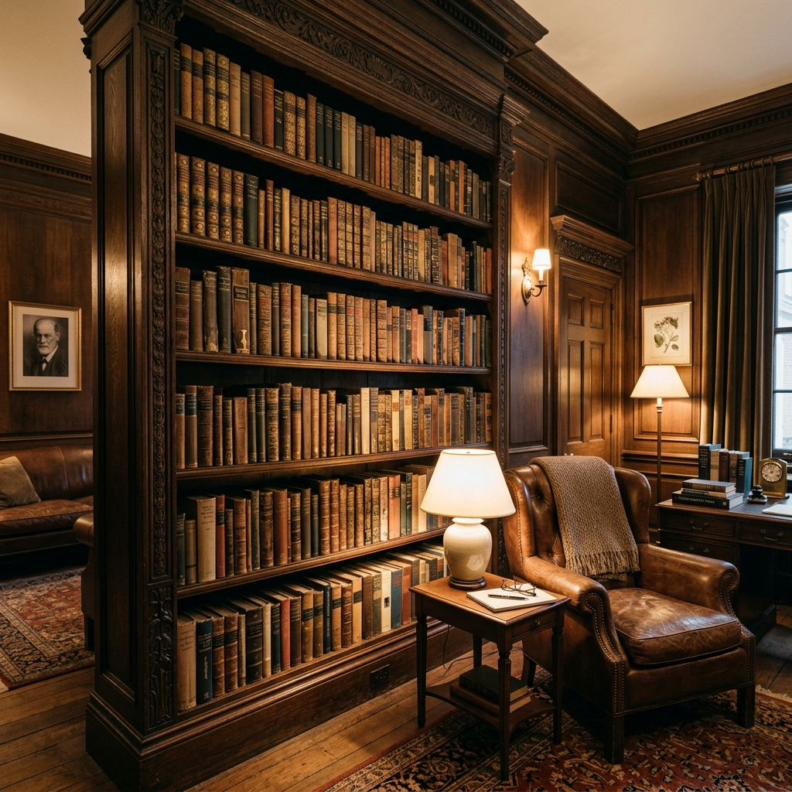
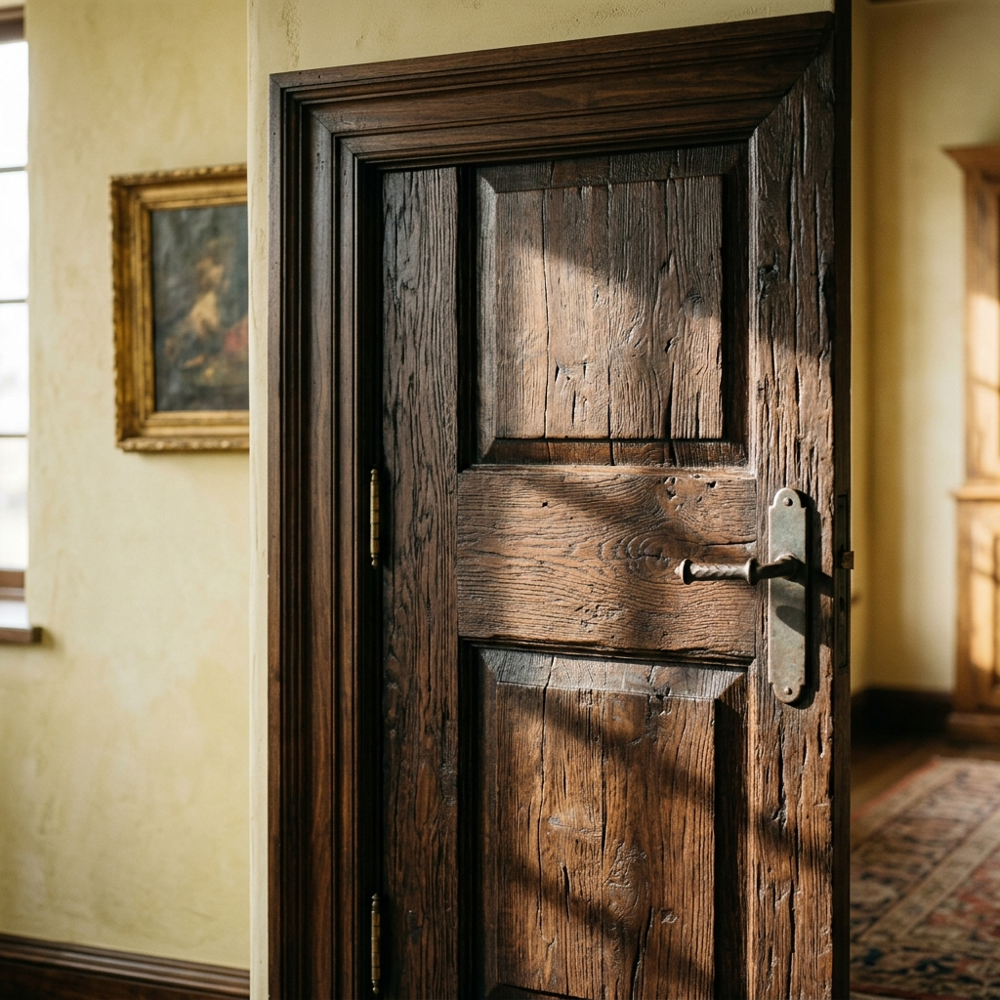

01. O ESPAÇO
O CONSULTÓRIO
O consultório é o lugar onde o trabalho analítico acontece.


O lugar da palavra.
TRADIÇÃO
 Freud permanece como uma das referências fundamentais do trabalho.
Freud permanece como uma das referências fundamentais do trabalho.

Livros que acompanham a escuta.
ARTE
A arte também habita este espaço.


O TRIPÉ
Freud, Lacan e Sabina Spielrein constituem as referências fundamentais que orientam o trabalho.

FREUD

LACAN
Lacan integra as referências que orientam a prática.

SPIELREIN
Sabina Spielrein integra o campo de referências que sustenta o trabalho.

CONTATO
Para informações sobre o consultório e os atendimentos:
[ NOME DA CLÍNICA ]
MURILO